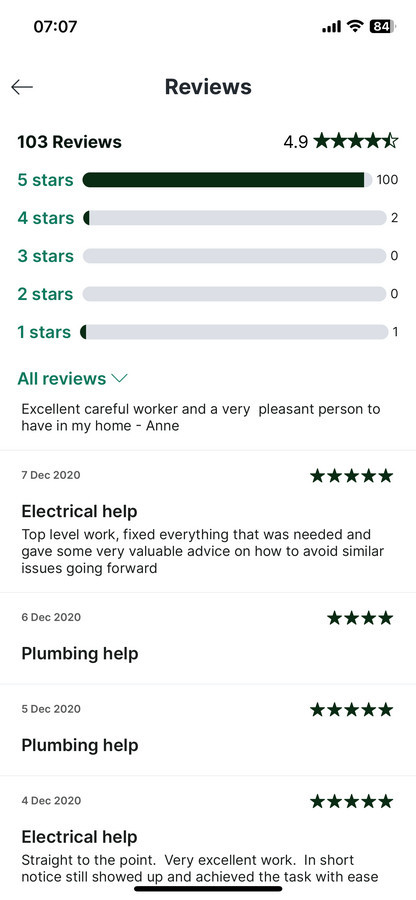
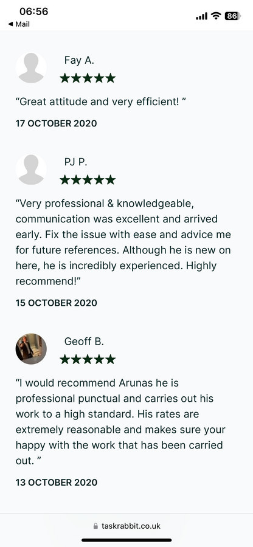

Daugiau nei 25 metai ŠVOK servise
ŠVOK serviso inžinierius. Didelė dalis patirties sukaupta Londono komerciniuose pastatuose, kur sistemos negali sustoti, o gedimo priežastį reikia rasti greitai.
-
PRADŽIA
Buitinės technikos servisas
Darbas „Senukuose“, buitinių prietaisų parduotuvėse, vėliau – „BMS Megapolis“ garantinio aptarnavimo servise.
-
17 METŲ
LONDONASKomercinių pastatų serviso inžinierius
4 metai – St. Magnus House (3 Lower Thames St.). 11 metų – kritinio serviso inžinierius Turner House (16 Great Marlborough St.), kur veikė CNN, Time Warner, HBO, Cartoon Network ir kitos kompanijos.
-
PROJEKTAI
Dešimtys Londono objektų
Iki ilgalaikių sutarčių – trumpalaikiai darbai per įdarbinimo agentūras. Taip susipažinta su daugelio Londono komercinių pastatų inžinerija.
-
2020
KARANTINAS350+ klientų per metus
Per darbų platformą „TaskRabbit“ kaip inžinierius aplankyta virš 350 klientų. Surinkta 100 penkių žvaigždučių atsiliepimų iš 103.
-
NUO 2021
LIETUVAServiso inžinierius „NIT UAB“
Grįžus į Lietuvą – serviso inžinieriaus darbas su Lietuvos objektais.
-
ŠIANDIEN
Savarankiška diagnostikos, remonto ir priežiūros praktika
Vilnius ir visa Lietuva. Buitinė ir komercinė įranga. Įvertinimas 5,0 iš 12 atsiliepimų Paslaugos.lt portale.


Ką tai reiškia praktiškai
Komerciniame pastate sistema negali „palaukti iki rytojaus“. Tokia aplinka išmoko dirbti metodiškai: matuoti, tikrinti versijas, skaityti dokumentaciją ir suprasti visos sistemos logiką, o ne tik atskirą įrenginį.
Ta pati metodika taikoma ir privačiame name – tik mastelis kitas.
Iš darbo objektuose
Matavimai, šaldymo kontūrai, automatika, vėdinimo kameros, komercinė šaldymo įranga